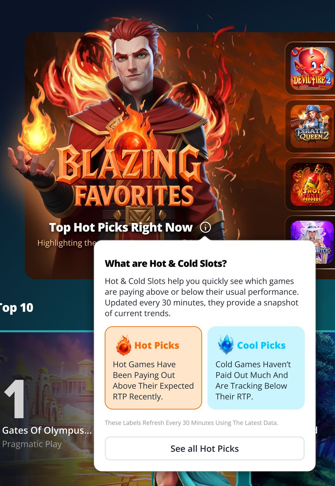
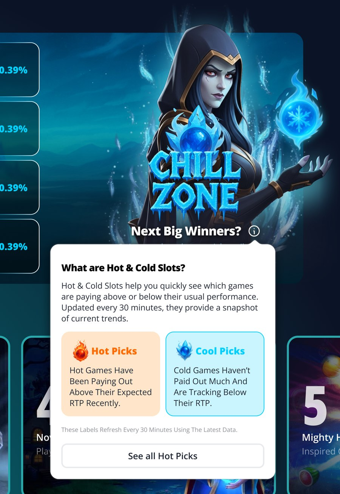
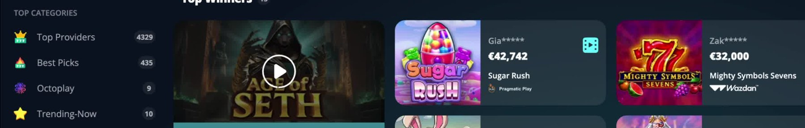
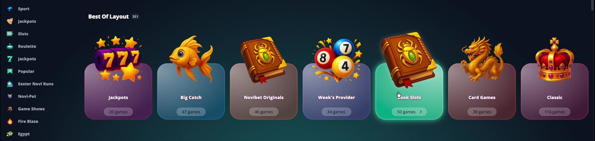
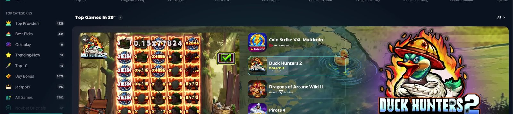

Various Lobby Layout Entry Point
Four small lobby layouts, each earning a permanent spot in Novibet's casino lobby but not enough on its own for a full case study: hot and cold, top winners, best-of, and a dedicated video format.
Four small layouts, each doing one real job
Novibet's casino lobby regularly gets new modules that surface a slice of the game library some specific way: by real-time performance, by category, by format. Each one is real production work with its own data logic and responsive behaviour, but on its own it's too narrow to justify a full case study.
This page collects four of them in one place instead. Each gets the same treatment: anatomy, mechanics, and whatever grounded the decision.
The short version
Four lobby modules, each surfacing a different slice of the game library.
Shipped as configuration rather than one-off screens, populated from live data or a fixed content rule rather than hand-picked per week.
Hot and cold
Two panels, games sorted by real-time RTP: paying out above expected (Hot) or below it (Cold).
Top winners
A hero win plus a row of recent big wins, each one replayable as real footage of the actual winning spin.
Best-of layout
A horizontal row of thematic category cards (Jackpots, Book Slots, Classic and similar), each opening to that category's games. Compact and standard card sizes.
Video layout
A full-width video reel cycling through a category's top games, synced to a game list and a static art panel next to it.
What's live today
Four layouts, documented below.
Hot and cold
Hot and Cold shown side by side at full width, no toggle needed. Games and RTP values refresh in place.
One panel at a time, toggle between Hot and Cold. Games list as a row.
Compact icon grid.
Games are sorted automatically by real RTP, Hot shows the highest, Cold the lowest, up to 4 games per category depending on device. The spec calls for the list to refresh every 30 minutes; the live info tooltip currently states 60 minutes. Worth confirming with Jay which is correct.
Top winners
Hovering a card's filmstrip icon rolls it into an animated state, clicking opens the Replay win modal: a short provider-branded loading transition, then the actual recorded footage of that winning spin.
Large Win Layout: a "largest wins" mechanism, separate categories for RNG and Live casino, both auto-updating in real or near-real time. RNG and Live both default to a 500 EUR win threshold, configurable. A later phase allows filtering further by bet multiplier (e.g. wins of 500 EUR+ at x20). Required elements: category icon and name, game element, masked username (e.g. st***81), winning amount, game name, provider name. The biggest win can run larger or sit in its own section, which is how the shipped hero card reads.
Best-of layout
Larger cards, art stacked above the name, game count as a pill at the bottom. Hovering a card highlights it and reveals a chevron next to the count.
Shorter cards, art sitting beside the name and count instead of above it. Same horizontal scroll, more cards fit before scrolling is needed.
Collections / Best of Layout: thematic category cards (by game type or feature, e.g. Book games, Egyptian, NoviPet, high volatility, Bonus Buy), shown in a row as a horizontal side scroll. An agent manages which categories appear. Category name and art must be visible, clicking a category opens a new window with that category's games. Two card sizes shipped, standard and compact, both matching what was asked for.
Video layout
"Top Games in 30″" row on the Casino and Live Casino category pages: a looping video of real gameplay footage, a synced list of up to 4 games, and a synced static art panel.
Casino Video Layout, promotional use on Casino and Live Casino category pages: a video playing footage based on the category (provider, game type), a list of games from that category with one openable, a static image tied to the category, and an "All" button opening the full category. What's live matches this, one video reel plus a 4-game list plus a static art panel, all in sync.
No formal study, grounded in the spec and reused patterns
No user research was run for any of the four layouts on this page.
Each layout's decisions are grounded in whatever actually informed them instead: a written spec, a pattern already established elsewhere in the lobby (the hero-card anatomy this page's layouts share with the Jackpot and Providers cards), or a design judgment call. Hot and cold, documented below, came from a written spec plus that shared hero-card convention, not a new pattern invented for it.
Worth validating: whether the Hot/Cold framing itself changes what players click, versus just being a different sort order on the same games.
What each layout is standing in for
Each of the four had a gap it was built to close.
Hot and cold
No layout surfaced games by real-time performance. Just categories and curated rows, nothing showing which games were paying out now versus which hadn't in a while.
Two different reasons to try a game, one layout to carry both. Hot chases a paying streak, Cold bets a quiet game is "due." Both needed to read as equally legitimate.
Top winners
A win claim on its own isn't proof. A euro amount alone is easy to scroll past and doubt, nothing tied it to a real, watchable moment.
RNG and Live casino needed separate categories. The two run on different result cadences, so the spec has them populate and threshold independently instead of sharing one feed.
Seeing a win should lead somewhere. Once convinced, the next step (try the game, tell someone) shouldn't require leaving the lobby to find it.
Best-of layout
Thematic promotion had no dedicated row. Grouping by feature or theme (book games, Egyptian, high volatility, bonus buy) needed its own place, separate from the standard category rows.
What gets promoted changes often, the layout shouldn't need a rebuild each time. An agent manages which categories appear, so the row can be repointed at whatever needs promoting without new design or dev work.
Video layout
A category row of static tiles doesn't sell why a game is worth trying. Icons and names show what's in a category, not what playing it looks like.
Promotion needed a format built around real footage, not stills. A heavier, video-led format for the Casino and Live Casino category pages specifically, which the regular category rows don't have.
Anatomy and data logic, one layout at a time
Hot and cold
Same anatomy, opposite framing. Hot runs a fire theme, Cold runs an ice theme, both built from the same component.
One card, two themes
Each panel shares the same pieces: background image, foreground character, stylised title ("Blazing Favorites" for Hot, "Chill Zone" for Cold), subtitle, info button, "See all" link, and up to 4 games with name, provider, and RTP. Only the theme, copy, and RTP direction change.
Populated from live RTP, not picked by hand
Hot pulls the highest-RTP games, Cold the lowest, from real RTP figures, not a curated list. Refreshes automatically (30 minutes per the spec, 60 per the live tooltip, see the note in Preview) and shows up to 4 games per category, fewer on narrower devices.
Responsive: two panels collapse to one plus a toggle
At full HD, Hot and Cold sit side by side, each with its own 4-game list. Below that it collapses to one panel with a Hot Picks / Cold Picks toggle to switch. The game list also changes shape: a horizontal row on tablet-width screens, a compact icon grid with the RTP badge under each thumbnail on mobile.
The info tooltip explains both, highlighted by where you opened it
Tapping the info icon opens a tooltip explaining both Hot and Cold, every time regardless of which panel is active. It's contextual though: open it from Hot Picks and that box gets an orange border, open it from Cool Picks and that box gets the highlight instead.

"Hot games have been paying out above their expected RTP recently." Hot Picks box outlined, Cool Picks plain.

"Cold games haven't paid out much and are tracking below their RTP." Cool Picks box outlined this time, Hot Picks plain.
Top winners
One row, real evidence. Every card links to actual recorded footage of that win, not a generic animation.
One hero win, a row of smaller ones
A hero card (the single biggest win) leads a scrolling strip of smaller win cards. Every card shares the same anatomy: game art, masked username ("Gia*****"), win amount, game name, provider, and a filmstrip icon marking real replay footage.

Hero card plus the scrolling row. Masked username, win amount, game name and provider repeat on every card.
The filmstrip icon signals real footage
Static by default, the filmstrip icon rolls into a film loop on hover, the cue that real footage backs this card, not just a number.
Share from the modal, Play now redirects out
Clicking a card opens the Replay win modal on the real recorded footage of that spin. Its footer repeats the win details, plus share icons (Facebook, WhatsApp, Telegram, X), a copy-link button, and a "Play now" button, which redirects out to the game rather than playing inside the modal.
The second phase (filtering by bet multiplier, e.g. 500 EUR+ at x20) and the separate RNG/Live categories aren't visible in this capture. Worth confirming before claiming either as shipped.
Best-of layout
One card component, two sizes. Same anatomy, different amount of room for the artwork.
A row of thematic category cards
A "Best Of Layout" header (total-games count badge) sits above a scrolling row of category cards, each with art, a name, and a game-count pill (Jackpots, Big Catch, Novibet Originals, Week's Provider, Book Slots, Card Games, Classic in this capture).

Standard size, 7 cards visible. Hovering Book Slots highlights the card and reveals a chevron next to the count.
Hover signals it opens, clicking goes to the category
By default a card shows art, name, and count. On hover it lifts with a themed glow and a chevron appears next to the count, the cue that clicking opens that category's full game list in a new window.
Two sizes: standard and compact
Standard stacks the art above the name and count, for a bigger piece of artwork. Compact sets the art beside them instead, a shorter card that fits more of the row before scrolling. Same component and hover behaviour, just less room for art.
Content is agent-managed, not hard-coded
Per the spec, which categories appear and in what order is set by an agent rather than shipped as a fixed list, so the row can be repointed at whatever Novibet needs to promote without a new build.
The two captures show different game counts for the same categories (Jackpots: 24 vs 20, for example) and different row totals (301 vs 351). Likely two separate demo data sets, not confirmed with Jay.
Video layout
One row, three synced parts: what's playing, what else is in the category, and the game it's currently on.
Three parts, one row
A "Top Games in 30″" header (count badge, "All" link) sits above one row: video on the left, up to 4 games from the category in the middle, and a static branded art panel on the right.

Duck Hunters 2 playing and highlighted in the list at the same time, with its art on the right. All three stay in sync.
Real footage, one game at a time
The video cycles through real captured gameplay per game, not one looping clip: reel spins for Coin Strike XXL Multicoin, then a Duck Hunters 2 bonus round climbing from 25 to 500, then the next game. Controls: mute toggle, skip-to-next, fast-forward.
List and art panel track the video, not picked independently
Whichever game is playing is the one highlighted in the list (checkmark plus outline) and shown in the art panel. All three change together as the video advances.
The spec asks for a game in the list to be "able to open." Whether clicking one actually jumps the video, or the list just displays what's playing, isn't confirmed from this capture.